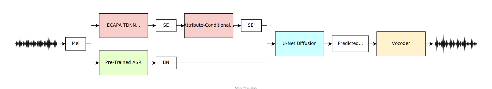

English-to-English
Mandarin-to-Mandarin
Cross-Lingual Accent Conversion
In cross-lingual accent conversion, we convert source accents to those of a different language in the absence of parallel data (e.g., apply a British accent to Mandarin speech only using British-accented English speech or apply a Sichuan accent to English speech only using Sichuan-accented Mandarin speech, as recordings of British-accented Mandarin speech or Sichuan-accented English speech are not available).English and Mandarin
Speech Style Conversion
Beyond typical accent conversion, our BN2BN model is also capable of generalized speech style transfer. There are no specific requirements for what constitutes a "speech style," which may be as broad as emotional speech or the speaking styles of iconic personalities from popular culture."Sarcastic Youth" Speech Style Conversion
"Formal British" Speech Style Conversion
"Cartoon Character" Speech Style Conversion
Identity-Preserving Age and Gender Editing
VoiceShop is capable of identity-preserving zero-shot age and gender editing. This performance is achieved through the use of an attribute-conditional normalizing flow model which operates on global speaker embeddings predicted by our diffusion backbone model. Conversion is performed in a continuous manner, allowing users to gradually interpolate across the spectrum of these attributes. All speakers in the following examples are not seen during training.
Continuous Age Editing
Continuous Gender Editing
Combined Multi-Attribute Editing
VoiceShop is capable of combined multi-attribute editing, enabling arbitrary unseen speakers to simultaneously modify their accent, age, and gender in a single forward pass.
Simultaneous Accent, Age, and Gender Editing
We demonstrate VoiceShop's ability to simultaneously edit a speaker's accent, age, and gender in a zero-shot manner using two examples of Australian and British source speakers. Both speakers are not seen by the model during training.Australian Speaker
We begin with a recording of an unseen out-of-domain speaker:We edit various attributes of this speaker's voice using our framework. We recommend referring back to this input sample occasionally to better understand the modifications enabled by the model.
Edit One Attribute
Edit Two Attributes
Edit Three Attributes
British Speaker
Let's consider another sample by a separate out-of-domain speaker:As above, we recommend referring back to this input sample as you explore the model outputs below.
Edit One Attribute
Edit Two Attributes
Edit Three Attributes
Ethical Considerations
As with all generative artificial intelligence systems, the real-world impact and potential for unintended misuse of models like VoiceShop must be considered. While there are beneficial use cases of our framework, such as providing entertainment value or lowering cross-cultural communication barriers by allowing users to speak other languages or accents in their own voice, its zero-shot capabilities could enable a user to generate misleading content with relative ease, such as synthesizing speech in the voice of an individual without their knowledge, presenting a risk of misinformation. In an effort to balance the need for transparent, reproducible, and socially responsible research practices, and due to the proprietary nature of portions of data used in this work, we share the details of our findings here, but do not plan to publicly release the model checkpoints or implementation at this time. The authors do not condone the use of this technology for illegal or malicious purposes. ×